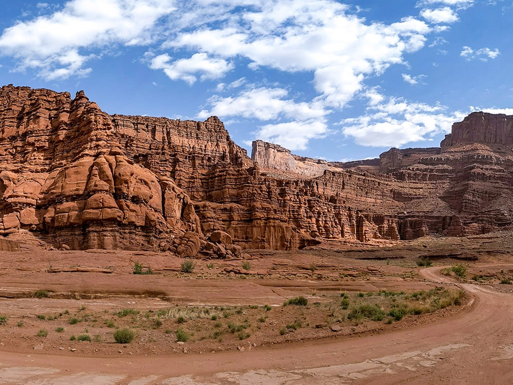
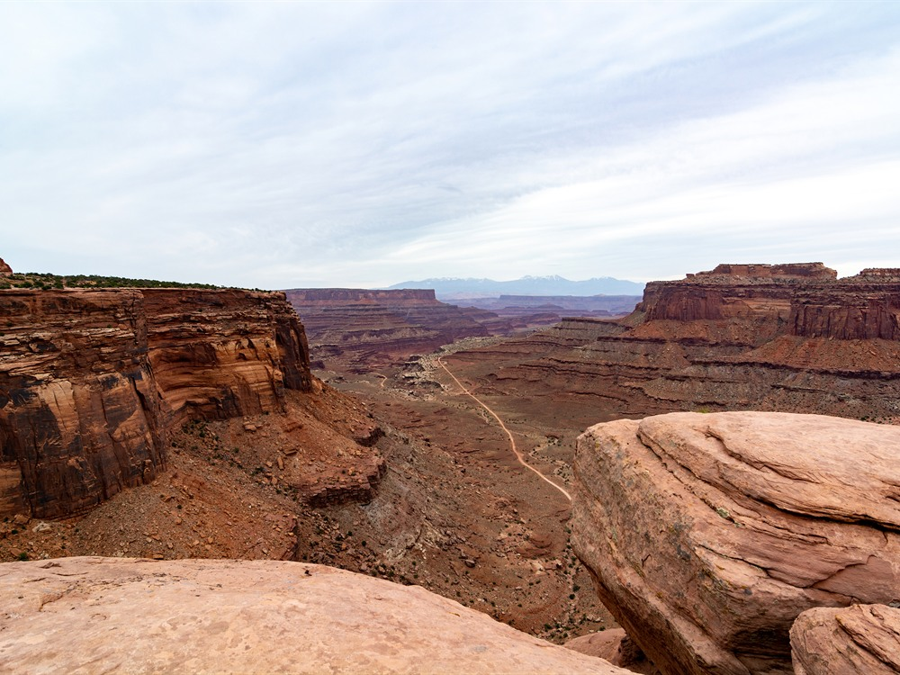
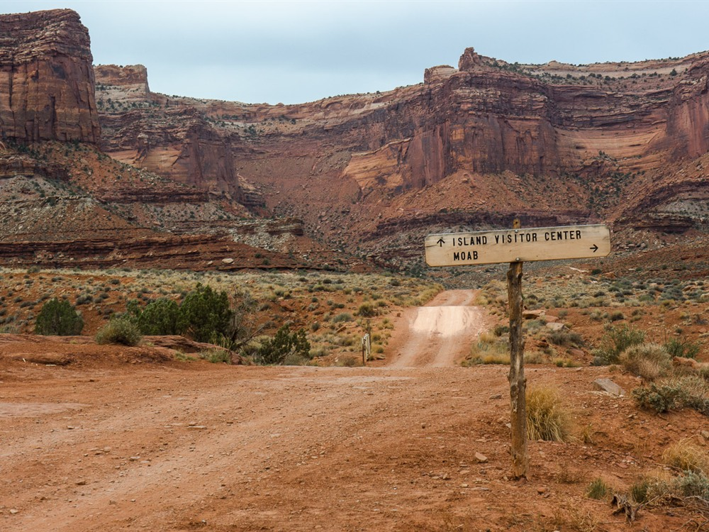
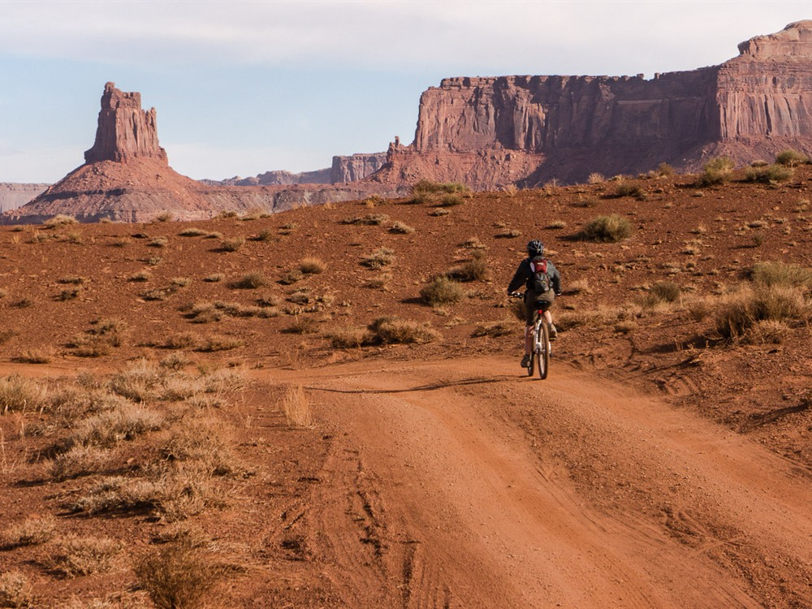
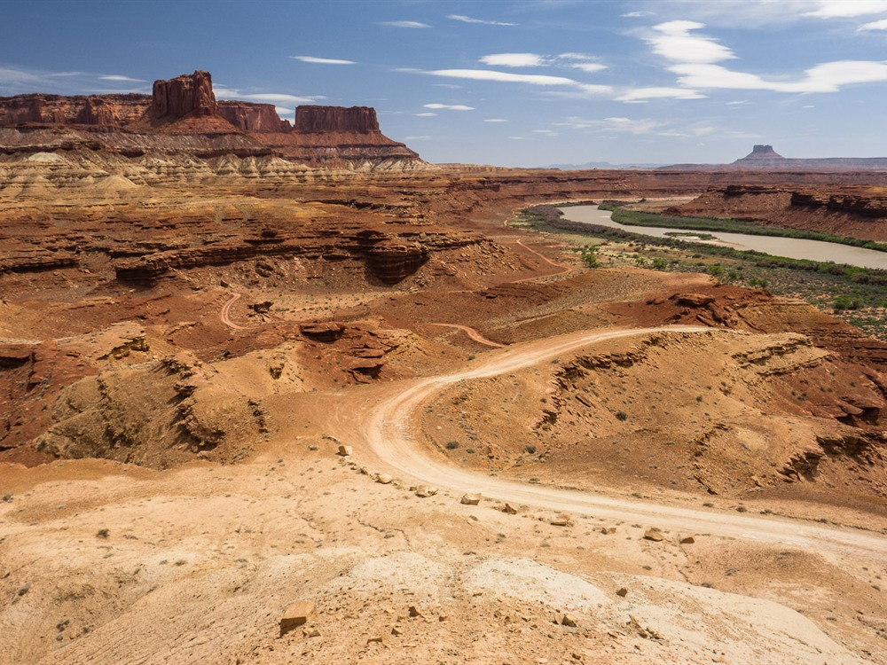
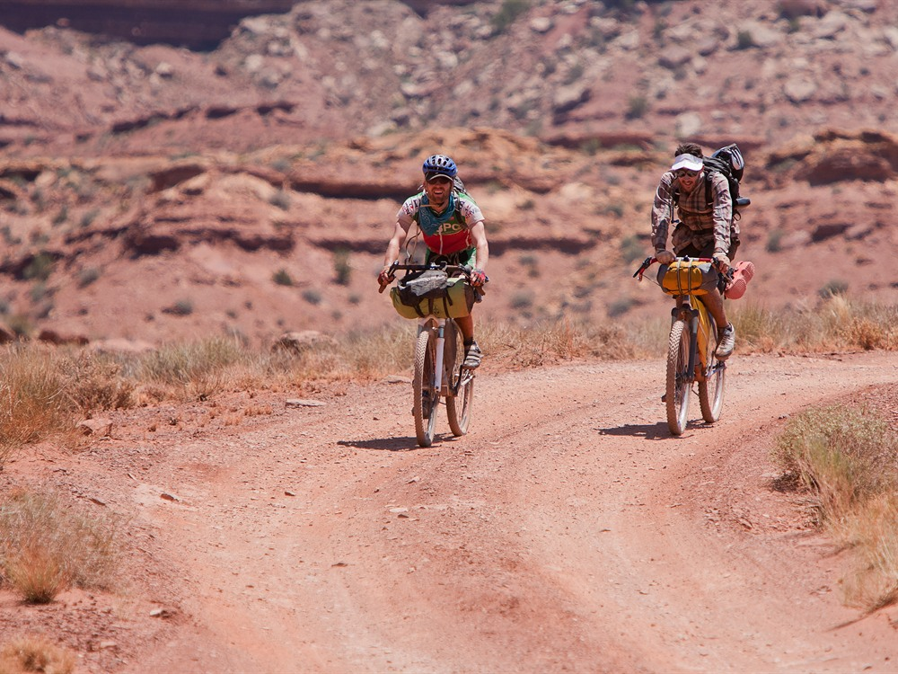
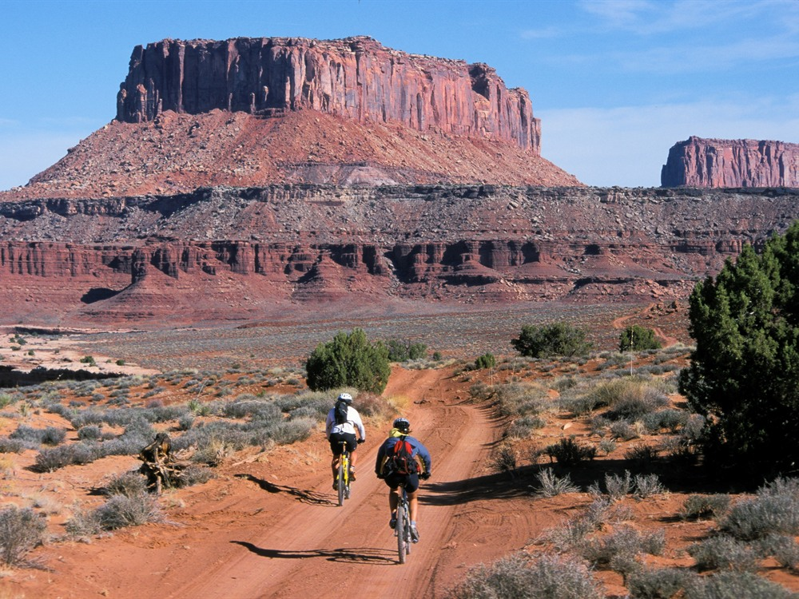
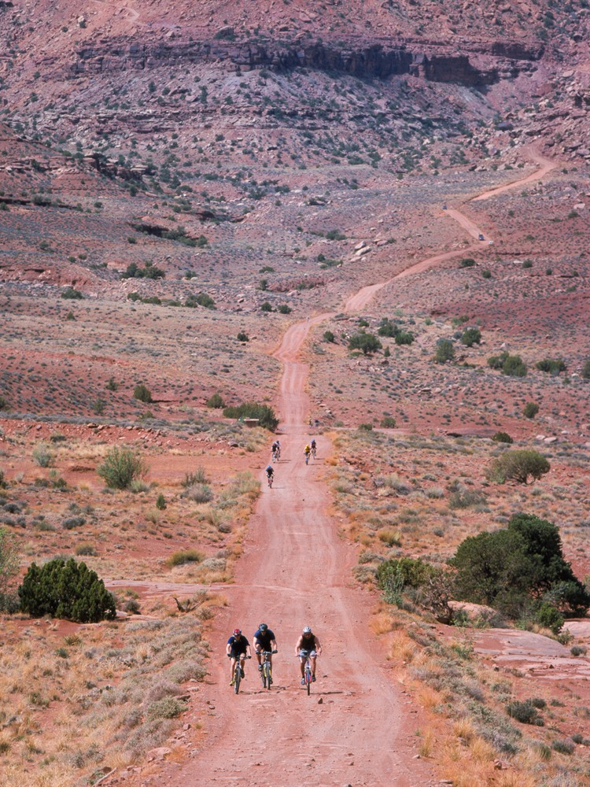
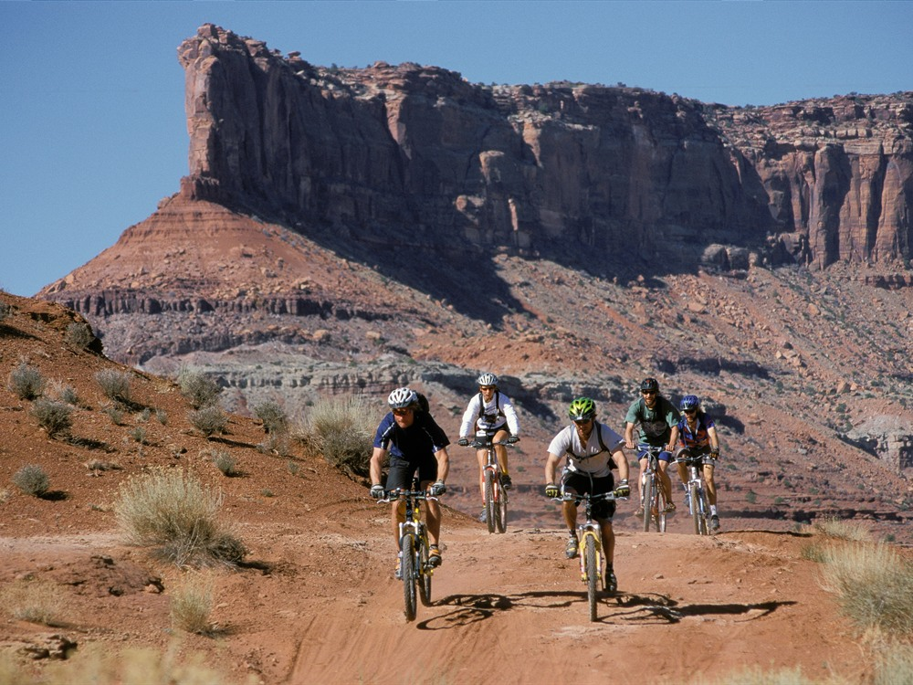

.jpg){kind=link}
Remote backcountry route traversing a sandstone bench beneath towering canyon walls with expansive desert vistas, rugged four-wheel-drive terrain, and access to some of the most dramatic landscapes in the Colorado Plateau.
Day-use and overnight permits are required for travel on the route
Most four-wheel-drive trips take 2 to 3 days, though experienced visitors may complete it in a single long day
Online day-use permit reservation fee: $6
Additional fees apply for overnight backcountry permits and camping reservations
How to Get There
From Moab (32 mi): Take US-191 north, turn west onto UT-313 toward Island in the Sky, continue into Canyonlands National Park, and follow signs to the Shafer Trail access point where the route descends to the White Rim Road.
Overview
The White Rim Road is a 71.2-mile unpaved 4x4 and mountain-bike road that loops below Island in the Sky on top of the White Rim Sandstone bench, 1,200 feet above the rivers, with views of the canyons and buttes. Most groups take two to four days. The Shafer Trail on the east side and Mineral Bottom on the west lead to it.
Good to Know
- Permits: required since 2015 for day trips and overnights, and they are hard to get: 100 day-use permits a day (50 motor, 50 bike), and campsites book far in advance
- Vehicle: a high-clearance, four-wheel-drive vehicle with low range is required
- Conditions: loose dirt, sandy washes, and slickrock; no water or services
Permits
Since September 2015, permits have been required for both day-use and overnight trips, whether by motor vehicle or bicycle, along the White Rim Road. The demand for permits frequently exceeds the number available in spring and fall months, especially March, April, May, September and October. Visitors are advised to make advance reservations.
A maximum of 100 day-use permits are issued per day, with 50 reserved for motorized vehicles and 50 for bicycles. A total of 25 permits of each type are available as advance reservations, while the other 25 permits are available on the day of a trip. Each vehicle and bicycle in a group requires its own permit, including any stowed bicycles that are expected to be ridden at any point along the road. Group sizes are limited to three motor vehicles and 15 bicycles.
Regulations
A high-clearance, four-wheel drive vehicle with a low gear range is required by park regulation since July 2014 on many backcountry roads including the White Rim Road. Front or rear-wheel drive only vehicles, as well as automatic all-wheel drive and low-clearance vehicles are not permitted. All drivers should be cautious at all times and be aware that towing fees usually exceed $1000 from the most remote areas. The road is rated moderately difficult for high-clearance, four-wheel drive vehicles in good weather conditions. The most difficult sections are the switchbacks of the Shafer Trail and Mineral Bottom Road, the Lathrop Canyon Road (an optional spur road), Murphy Hogback, and Hardscrabble Hill.
This article uses material from the Wikipedia article "White Rim Road", which is released under the Creative Commons Attribution-Share-Alike License 3.0

-1000.jpg)
.jpg){kind=link}

.jpg){kind=link}



.jpg){kind=link}



.jpg){kind=link}

.jpg){kind=link}
.jpg){kind=link}

_(5a1f46fd-155d-451f-6742-0856f2ad632f).jpg){kind=link}

_(7167153550).jpg){kind=link}

_(7167154548).jpg){kind=link}